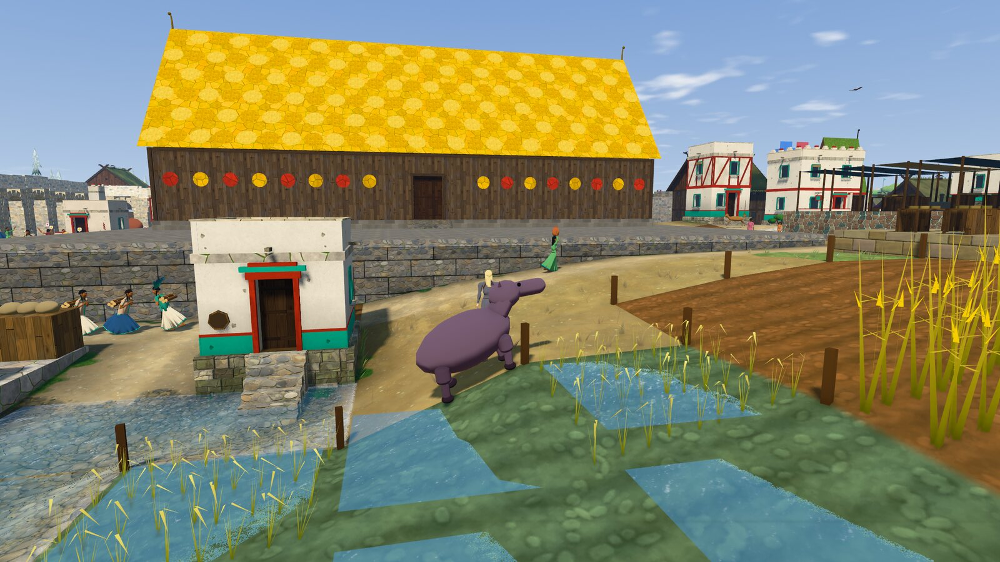
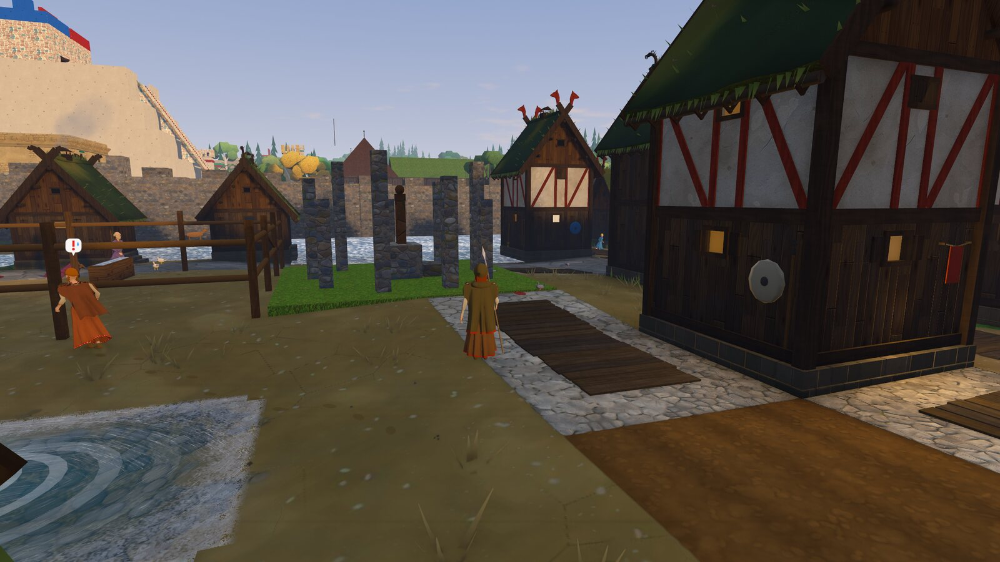

Os mundos prontos nasceram de novo
Cada mundo pronto é um mundo vivido pelo próprio jogo, sozinho, por décadas ou séculos, e guardado. Como o patch mudou o jogo inteiro, os sete foram vividos de novo, do zero, com o código final: os bairros já nascem com a sua fama, as cidades com as obras grandes que ergueram sozinhas, os banhos e as praças com gente.
A megalópoleHedebynível 5 no ano 60, 179 almas na cidade621almas no mundo, 4 povos, 18 povoados
A metrópoleRomaa maior cidade, no ano 57661almas no mundo, 5 povos, 19 povoados
- A megalópole mudou de cidade. A semente de antes, com o código final, ficou no nível 4 até o ano 130: com a guerra agora alcançando as cidades muradas, aquele mundo andou de outro jeito. Troquei pela semente vizinha, que chegou ao nível 5 no ano 60 — e a maior cidade dela é Hedeby, do povo nórdico, com o grande salão, o grande palácio, um templo, um teatro e um segundo teatro, maior, em obra.
- A guerra mundial começa com a Grande Coalizão em armas, e a maior cidade agora é Tenochtitlan, com o palácio de 24 metros.
- Os mundos de 100, 500 e 1000 anos foram vividos de novo, século a século.
- Nada foi posto à mão. Cada mundo é só o que o jogo fez sozinho; em cada um, o verificador do mundo não achou nada de errado, e o mundo guardado volta igual ao ser aberto.
O que muda quando você jogaAbrir a megalópole e cair numa cidade nórdica com a sua maravilha de pé e outra obra grande subindo; abrir a metrópole e encontrar Roma à frente. Os bairros já chegam com a vida que tiveram.